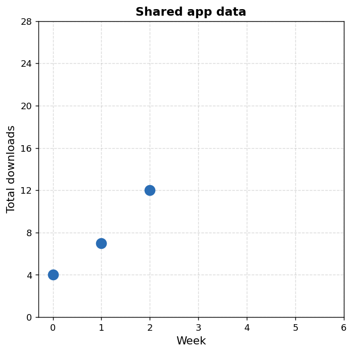
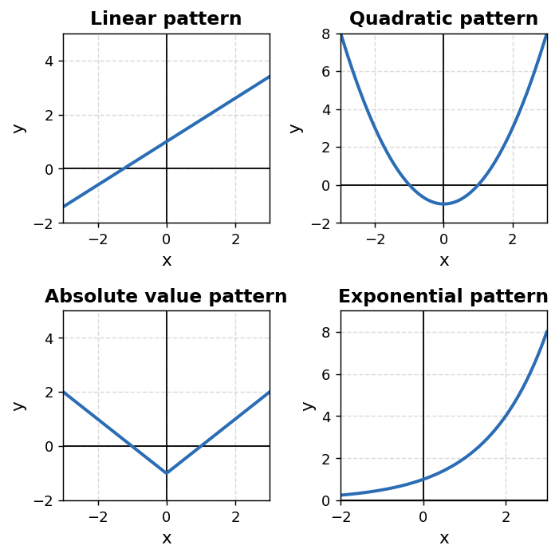
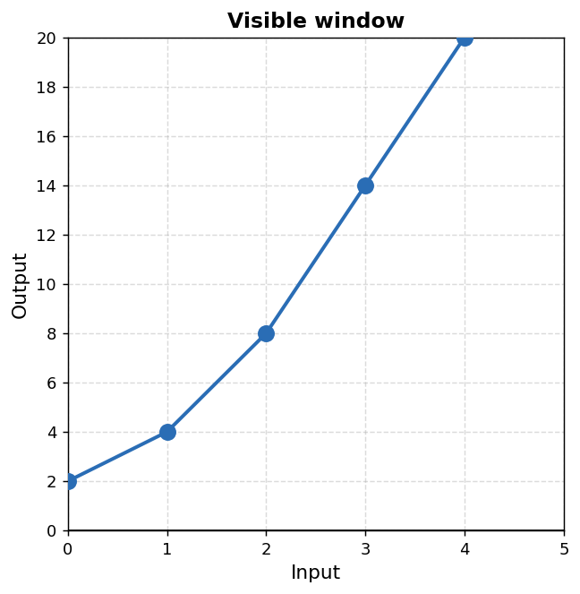
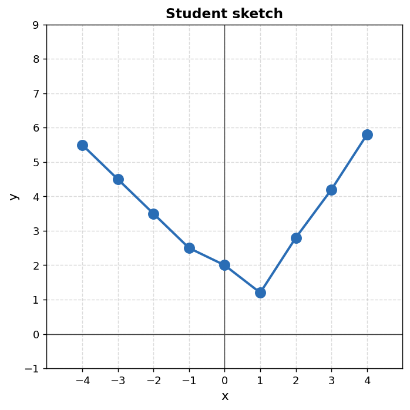
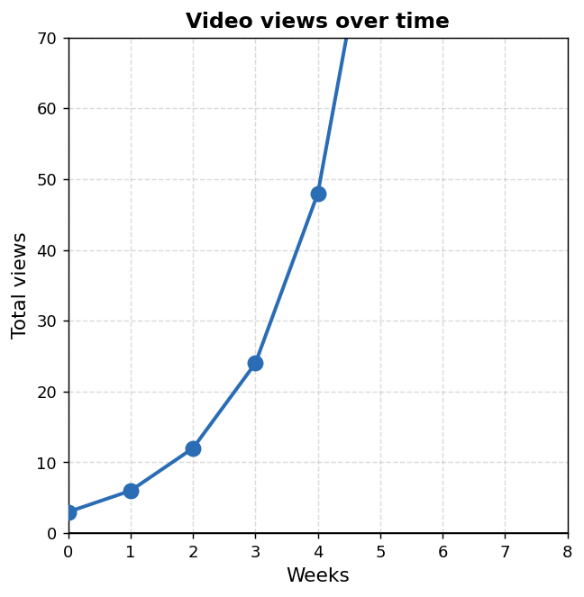

Mathematical idea: A function family is not just a graph shape to memorize. It is a pattern of change that can appear in tables, equations, graphs, and contexts.
Today we will practice identifying common function families, comparing how they behave, and defending classifications with evidence from more than one representation.
Students will recognize common function families from graphs, tables, equations, and contexts.
I can statements
This is a long-range preview for future lessons. Do not solve it today. Instead, annotate it individually. Circle anything familiar, underline symbols or directions that seem important, and write notes about what information you think will be needed later.
As you annotate, ask yourself: Which representation would you trust first? Which representation might be misleading? What extra evidence would help you classify the relationship?
Future Task — Conflicting Family Evidence
A new school app tracks total downloads after students begin sharing it. The data below shows only the first three weeks. Different students disagree about the function family.

| Week ($w$) | 0 | 1 | 2 |
|---|---|---|---|
| Downloads ($D$) | 4 | 7 | 12 |
"It is probably linear because the points mostly move upward in a steady direction."
"It might not be linear because the number of new downloads seems to be changing — but I need more data to be sure."
Directions
Read the introduction aloud with a partner or in a small group. As you read, annotate the text by highlighting important ideas, circling key vocabulary, and writing short notes about connections, questions, or predictions in the margins.
A function family is a group of functions that share similar behavior. Members of the same family may have different numbers in their equations, but they change in a similar way.
For example, a linear relationship changes by adding the same amount again and again. A quadratic relationship often grows by changing amounts that form a pattern. An absolute value relationship has a turning point and two straight branches. An exponential relationship changes by multiplying by a common factor.
Graphs can help us notice families, but graph shape alone is not enough. A rough sketch, a small window, or a few points can be misleading. Tables, equations, and contexts give additional evidence about how the output changes as the input changes.
In this section, classification means making a reasonable family decision from evidence. Classification is not the same as full modeling. A classification tells us the likely type of behavior; a full model gives a specific rule that matches the situation.
Stop and Discuss
Each function family has a typical way that outputs change.

Important: The graph can suggest a family, but the evidence should come from how the relationship behaves.
A student wants to classify this relationship.
| Input ($x$) | 0 | 1 | 2 | 3 | 4 |
|---|---|---|---|---|---|
| Output ($y$) | 6 | 10 | 14 | 18 | 22 |
Two tables are shown. One student says both tables are linear because both outputs increase.
| $x$ | 0 | 1 | 2 | 3 |
|---|---|---|---|---|
| $y$ | 3 | 6 | 9 | 12 |
| $x$ | 0 | 1 | 2 | 3 |
|---|---|---|---|---|
| $y$ | 3 | 6 | 12 | 24 |
When classifying a function family, collect evidence before choosing a label.
Evidence sentence frame: I think this family is __________ because the __________ representation shows __________.
A student looks at the visible graph window and says, "This must be linear because the graph keeps going up."

| $x$ | 0 | 1 | 2 | 3 | 4 |
|---|---|---|---|---|---|
| $y$ | 2 | 4 | 8 | 14 | 20 |
Claim: "Increasing means linear."
A relationship is represented by the equation $y=x^2+2$ and the partial table below.
| $x$ | 0 | 1 | 2 | 3 |
|---|---|---|---|---|
| $y$ | 2 | 3 | 6 | 11 |
Stop and Discuss
A student says, "I do not need a table if I already have a graph." What might the student miss by relying only on the graph?
Many incorrect classifications come from using one weak clue.
Revision frame: The claim is incomplete because __________. A stronger claim would use __________ as evidence.
Student claim: "The equation $y=x^2+3$ is linear because it has an $x$ in it."
A student looks at the sketch and says, "This is quadratic because it turns around."

Contexts can suggest a family, but context clues should still be checked with numbers.
Classification is a first decision. A full model needs a specific equation, table, graph, and interpretation.
A video starts with a small number of views. Each week, the total views multiply by the same factor.

| Week ($w$) | 0 | 1 | 2 | 3 | 4 |
|---|---|---|---|---|---|
| Views ($V$) | 3 | 6 | 12 | 24 | 48 |
Choose one family: linear, quadratic, absolute value, or exponential.
Function families describe patterns of behavior. A family classification should be based on evidence from how the relationship changes, not only on how a graph looks.
Tables can show whether outputs change by constant adding, changing differences, turning behavior, or repeated multiplying. Equations can reveal structure such as $x$, $x^2$, $|x|$, or a variable in the exponent. Contexts can explain why a certain type of change makes sense.
Classification is not the same as full modeling. Classification names the likely family. A full model gives a specific rule and explains how the representations match the situation.
Look back at the future task. Do not solve it yet. Highlight one part that makes more sense now than it did at the beginning. Circle one part that still feels unfamiliar. Write one sentence about what representation you would look at first.